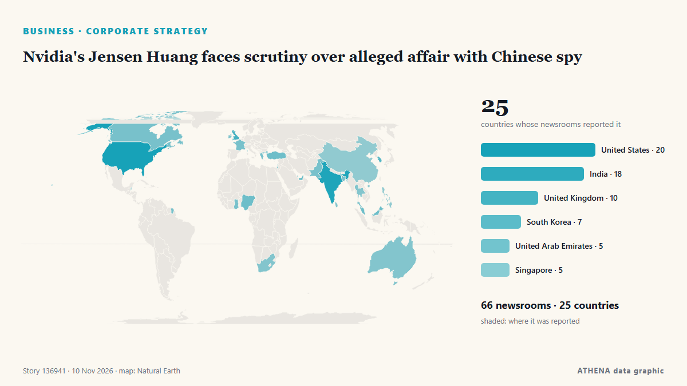

Επιχειρήσεις, Εταιρείες & Επενδύσεις
ΧορηγούμενοΠαρουσιάζεται από  Cybernetics and Artificial Intelligence Lab Welcome to the Cybernetics and Artificial Intelligence Laboratory, established at the Department of Business Administration of the National and Kapodistrian University of Athens. The lab is headed by Professor Dimitrios Thomakos. The lab aims to do research that can be published in top venues. Our research uses tools and methods of Artificial Intelligence, and lies in the following areas: - Forecasting - Decision making - Cyber security - Finance We are always looking forward to collaborating with exceptional students!
Cybernetics and Artificial Intelligence Lab Welcome to the Cybernetics and Artificial Intelligence Laboratory, established at the Department of Business Administration of the National and Kapodistrian University of Athens. The lab is headed by Professor Dimitrios Thomakos. The lab aims to do research that can be published in top venues. Our research uses tools and methods of Artificial Intelligence, and lies in the following areas: - Forecasting - Decision making - Cyber security - Finance We are always looking forward to collaborating with exceptional students!
Οι τίτλοι των ειδήσεων παρουσιάζονται στα αγγλικά, όπως δημοσιεύτηκαν.

Εταιρική στρατηγικήNvidia's Jensen Huang faces scrutiny over alleged affair with Chinese spy
President Donald Trump was briefed about a year ago about those intelligence findings, The New York Times reported. από CNBC World
| 28 Οκτ | 93 |
|---|---|
| 29 Οκτ | 104 |
| 30 Οκτ | 92 |
| 31 Οκτ | 27 |
| 1 Νοε | 33 |
| 2 Νοε | 116 |
| 3 Νοε | 111 |
| 4 Νοε | 112 |
| 5 Νοε | 111 |
| 6 Νοε | 77 |
| 7 Νοε | 32 |
| 8 Νοε | 51 |
| 9 Νοε | 76 |
| 10 Νοε | 10 |
Berkshire's Q3 net earnings down by 28% to $22.11B
Berkshire Hathaway Inc. announced on Saturday that its net earnings attributable to shareholders saw an annual decline of 28% to land at $22.11 billion. από AzerNews
Dublin traffic restrictions to begin ahead of EU meetings
Part of Dublin city's North Wall Quay is closed to traffic this morning as restrictions begin ahead of two major summits being held this week. από RTÉ News
Retailers suffer subdued October as shoppers hold back ahead of Black Friday
Total UK retail sales increased by 1.5% year on year, although this was above the three-month average growth of 1.2%, according to the BRC and KPMG. από Evening Standard (London)
David Ellison says AI could be the ‘biggest creative unlock in modern history’
During Paramount Skydance's latest earnings call, CEO David Ellison said "it's hard to imagine" AI won't have a bigger impact on the film industry than CGI. από The Verge
Nigeria, UK deepen creative industry ties ahead of 2028
The UK and Nigeria have concluded a series of creative-sector engagements in Lagos, connecting creative businesses, practitioners, policymakers and cultural institutions with expertise, networks and… από Daily Trust
Five Things to Know about 'Grand Theft Auto'
GTA has become a cultural institution despite criticism, with its content spawning countless online memes. από Express Tribune
Dolly Parton's manager drops lawsuit against nephew
The lawsuit filed in September accused the late musician's nephew of attempting to extort money from her estate. από Free Malaysia Today
One of the killers of James Bulger to remain in prison
Jon Venables told parole staff dealing with his latest review, which took place in private, that he was not seeking release. από Evening Standard (London)
Moving sustainability commitments from ambition to measurable outcomes
An organisation’s ability to translate sustainability ambitions into measurable outcomes and... από Business Daily Africa
After the US midterm rout of Trumpism, the world struggles to trust America again
For Joe Reeve, the midterm afterglow faded fast.The London startup founder was among the wave around the Trump-weary world awakening to. από Mainichi (English)
Apple is racing to make Siri more agentic
Bloomberg's Mark Gurman says CEO John Ternus is pressuring AI czar Craig Federighi to accelerate the Siri roadmap and deliver a powerful AI agent that can compete with OpenAI's Dots or Meta's Muse. από The Verge
Majority accuses Akufo-Addo administration of creating the conditions for passport racketeering.
By Amoako Kwame The Majority in Parliament has accused the previous Akufo-Addo administration of creating conditions that enabled an alleged service passport racketeering scheme at the Ministry of… από GBC Ghana Online
Iran’s 26th International Electricity Exhibition showcases latest industry achievements
The 26th Iran International Electricity Exhibition is underway in Tehran, bringing together 420 domestic and foreign companies to showcase their latest products, technologies and capabilities under… από IRNA (English)
Malta’s Creative Community Hits Back At Culture Minister Over Controversial Comments
Culture Minister Malcolm Paul Agius Galea is facing mounting criticism following his controversial comments about artists and creativity, with several prominent figures from Malta’s creative… από Lovin Malta
Meta’s Dave Wehner leaves to become CFO of AI start-up Fireworks
Dave Wehner has spent 14 years at Meta, more than eight of them as chief financial officer. από The Next Web
Babcock and Everllence sign MOU to power the next generation of Arrowhead Frigates
Babcock has signed a Memorandum of Understanding (MoU) with Everllence, a leading Danish provider of propulsion, decarbonisation and efficiency solutions for shipping, to explore a strategic… από Naval News
Greece joins EIB initiative with €120 million to boost European tech companies
Greece is actively participating in Europe’s drive to finance the technologies of the future and create globally competitive businesses, committing €120 million to the joint investment fund… από Naftemporiki (English)
SoftBank to face scrutiny of AI strategy at Q2 earnings after sell-off
Its bets on the tech, and its OpenAI stake, raise questions about how it will weather the sector’s setbacks. από The Business Times
QatarEnergy buying 25% interest in Namibian offshore exploration license from Chevron
Qatar’s state-owned oil & gas firm QatarEnergy has entered into an agreement with Chevron's Namibian subsidiary for the acquisition of a... από Offshore Energy
Media industry still has a problem with sexual abuse, UK minister says
Britain’s culture minister, Lisa Nandy, said on Sunday there was still a problem with sexual abuse in the media industry after Russell Brand, once a high-profile comedian and actor, was convicted of… από Cyprus Mail
Situation in South Caucasus shows signs of improvement — Russian top security official
The normalization of Armenian-Azerbaijani relations has contributed to an improvement in the situation in the South Caucasus, Sergey Shoigu said. από TASS (English)
Tesla to refund many Cybertruck deposits as demand exceeds production, Musk says
Its CEO Elon Musk says this allows the automaker to accommodate increased output of its new Cybercab. από The Business Times
Al Arabiya: Iraqi delegation delivers US message to Iran
According to the sources, the delegation met with Iranian officials in Tehran. από TASS (English)
(LEAD) FTC to fine Baemin 331 bln won, Coupang 300 bln won for unfair practices
SEOUL, Nov. 9 (Yonhap) -- South Korea's antitrust regulator said Monday it will ... από Yonhap (English)
Dialogue in Ghana explores China's governance, global contribution
China's Governance and Worldwide Development Global Dialogue took place in Accra, Ghana, on Friday. από CGTN (World)
Justice minister nominee cautious on withdrawal of indictments against Lee
SEOUL, Nov. 9 (Yonhap) -- Justice Minister nominee Lee Yong-cheol on Monday expr... από Yonhap (English)
OpenAI Raises $11 Billion At $1.25 Trillion Valuation
The funding was wired to the company as of Friday. από NDTV
Luxembourg workers enjoy salaries more than double the EU average
The average annual full-time adjusted salary in Luxembourg was €85,600 in 2025, according to a report from Eurostat. από Luxembourg Times
Jennifer Welch & Angie Sullivan Apologize For Laughing At “Insensitive” Charlie Kirk Joke On Podcast: “We Regret It”
After losing several advertisers, the hosts of the I’ve Had It podcast have apologized for making light of Charlie Kirk’s killing. από Deadline
Big on Savings, Big on Happy with Cebu Pacific’s 11.11 Seat Sale
Fares as Low as SGD 117 MANILA, Philippines, Nov. από Laotian Times
Spanish companies plan district heating networks powered by data center waste heat
Ignis and Rebi are exploring the development of district heating networks using waste heat from data centers. από pv magazine
Gov't weighs W2tr in urgent firefighting aid amid local funding strain
South Korea’s central government and ruling party have agreed to consider providing around 2 trillion won ($1.5 billion) in financial support for urgent, essential firefighting investments, amid… από Korea Herald
Adani Ports agrees to acquire Europe’s Evos B.V. for €2.56 billion
Rotterdam, Netherlands (Ports Europe) November 8, 2026 – Adani Ports and Special Economic Zone (APSEZ) has agreed to acquire Netherlands-based Evos B.V., Europe’s second-largest independent liquid… από Ports Europe
Algorithms now decide which stories reach readers, Türkiye’s communications chief says
Duran rejects a digital world in which some voices are heard far more widely than others. από TRT World